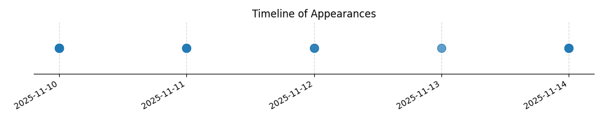

Kategorie: Provozní postupy
Standardní provozní postupy v letectví pro letištní okruh vyžadují, aby všechny zatáčky při přiblížení na přistání a po vzletu byly prováděny doleva, pokud není řídícím letového provozu nebo místními předpisy povoleno jinak. To je z důvodu lepší viditelnosti a snížení rizika kolize. Možnost A je nesprávná, protože zatáčky se standardně provádějí doleva. Možnost B je nesprávná, protože letový plán se týká letu mimo okruh, nikoli postupu na něm.

| Datum výskytu |
|---|
| 2025-11-14 |
| 2025-11-13 |
| 2025-11-12 |
| 2025-11-11 |
| 2025-11-10 |